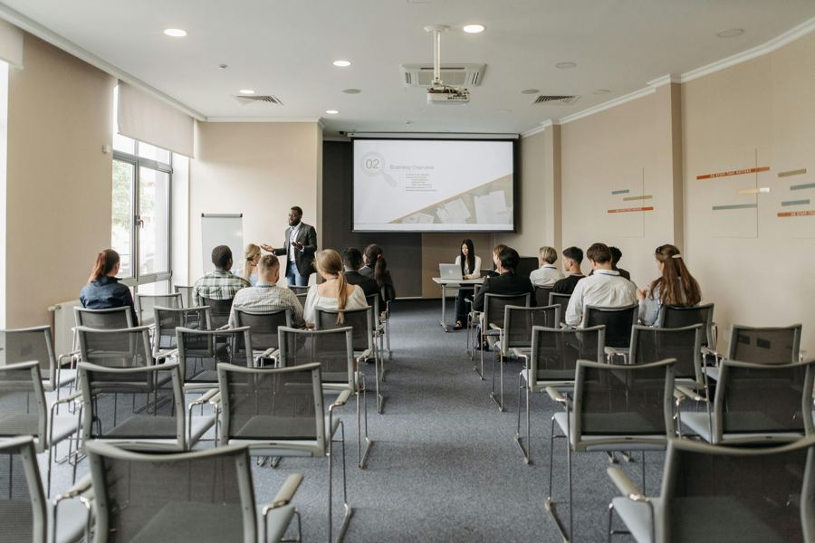
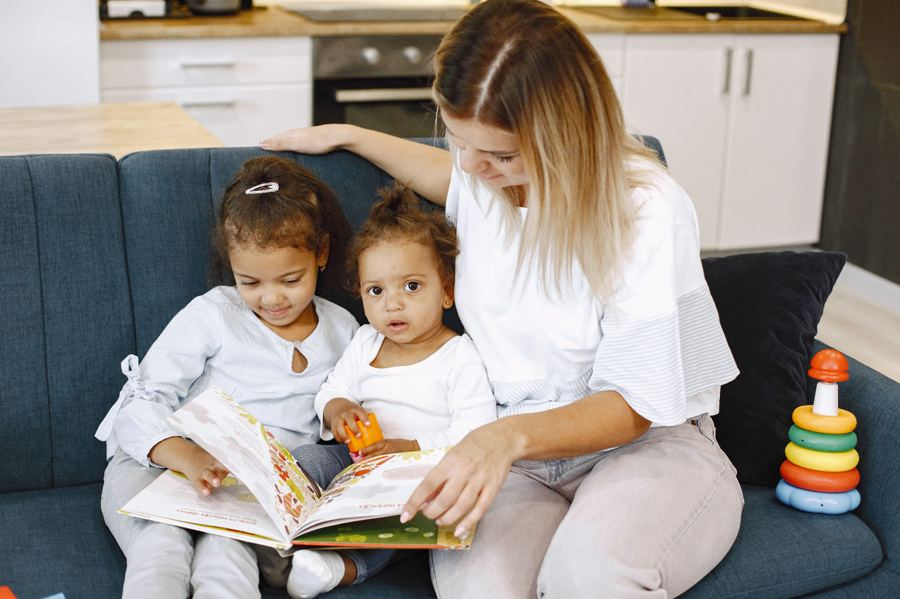
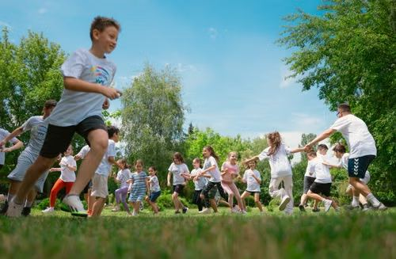

Aptis Speaking
Part 1: In this part, I am going to ask you three short questions about yourself and your interests. You will have 30 seconds to reply to each question.
1. Tell me about the last time you went to the cinema.
=> Last month, I went to the cinema with my friends. We watched an action movie and had a great time. We shared a big bag of popcorn during the movie. It was a great way to spend time with my friends.
2. What kind of movies do you like to watch?
=> I like watching action movies because they are exciting and interesting. They usually have amazing special effects and thrilling stories. I always feel excited while watching them.
3. Please tell me about a member of your family.
=> My mother is very kind and hardworking. She always takes care of my family. She cooks delicious meals for us every day. I really admire her patience and love.
Part 2: In this part, I'm going to ask you to describe a picture. Then I will ask you two questions about it. You will have 45 seconds for each response.
 |
1. Describe the picture In the picture, I can see many people in a classroom. They are learning. The teacher is teaching and the students are listening to him. The projector is showing the slides. They look focused. On the wall, I can see words. I like this picture because it reminds me of my school days |
2. Tell me about a time when you attended a useful presentation.
=> Last month, I attended a presentation about English learning. It was made by the best student in my school. It was really useful to me because I could learn a lot of things. The speaker explained the topic clearly with simple examples. I took notes so I could remember the tips later.
3. Do you think continuous training for employees is important for a company's success?
=> I think it is practical because employees can improve their skills and work better. It is very important for a company’s success. For example, training helps employees learn new technology. This makes the whole company more competitive.
Part 3: In this part, I'm going to ask you to compare two pictures, and I will then ask you two questions about them. You will have 45 seconds for each response.
1. Tell me what you can see in these two pictures.


=> The two pictures show children with different activities in different places
- in the first picture, I can see a woman and two children at home. They are seating on a sofa and reading books. They look relaxed.
- in the second picture, I can see many children in a park. They are playing games. They look very excited. The weather is very nice and good for outdoor activities. Both pictures show children enjoying their free time in different ways. It seems like they are all having a good time.
2. What do you think are the benefits of these two different types of activities for children?
=> both activities have different attractions depending on children’s interests.
- some children like reading books because it is enjoyable. They can relax and improve their knowledge.
- some children like playing games outdoors because it is fun and good for their health. They can enjoy fresh air and meet other people. Therefore, they can improve their communication skills. Both activities help children grow in different ways. Parents often try to balance both types of activities for their kids.
3. Do you think children nowadays spend enough time playing outdoors?
=> I don’t think children nowadays spend enough time playing our outdoors. They spend too much time at home and at school. They also use mobile phones a lot. I think parents should encourage their children to play outside more often. This would help them stay healthier and more active.
Part 4: Part 4: In this part, I'm going to show you a picture and ask you three questions. You will have 1 minute to think about your answers before you start speaking. You will have 2 minutes to answer all three questions.
Tell me about a time when you had to face a difficult challenge in your life.
How did your feelings change before and after you overcame that challenge?
What are the benefits for people when they face and conquer challenges?
=> Regarding the first question, today I'm going to talk about a time when I faced a difficult challenge in my life. Last year, I prepared for an important English test. I studied hard every day and finally passed the test with a good score. I sometimes wanted to give up because it was so tiring. But my family encouraged me to keep going.
Turning to the second question, before the test, I felt nervous and worried. After I passed it, I felt happy, proud and more confident. Passing the test made all my hard work feel worthwhile.
About the last question, I think facing challenges helps people become stronger and more confident. It also helps them learn new skills and achieve their goals. It also teaches people to never give up easily.